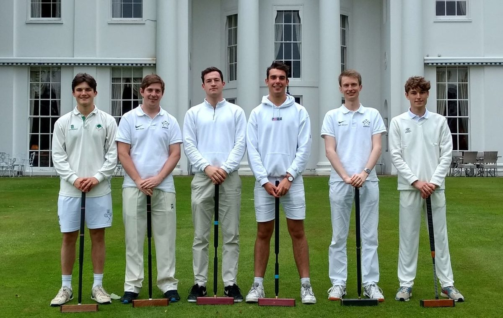
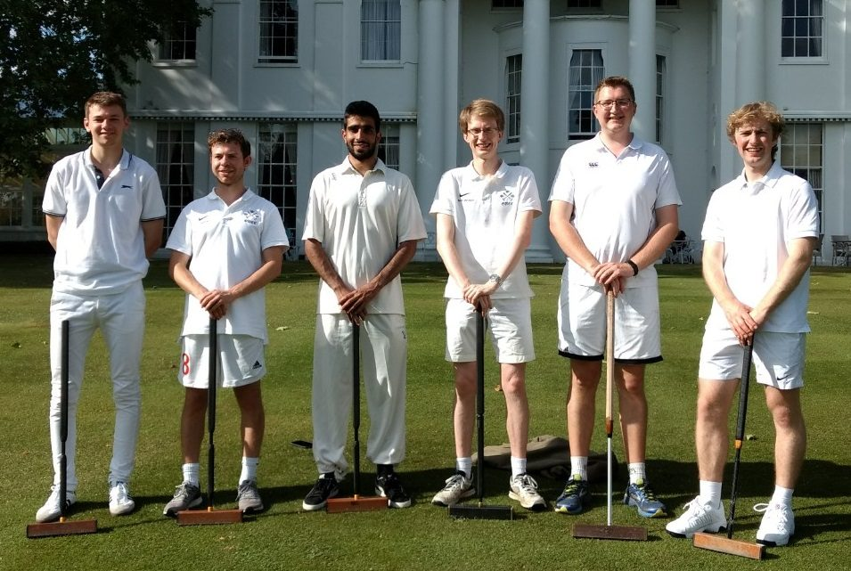
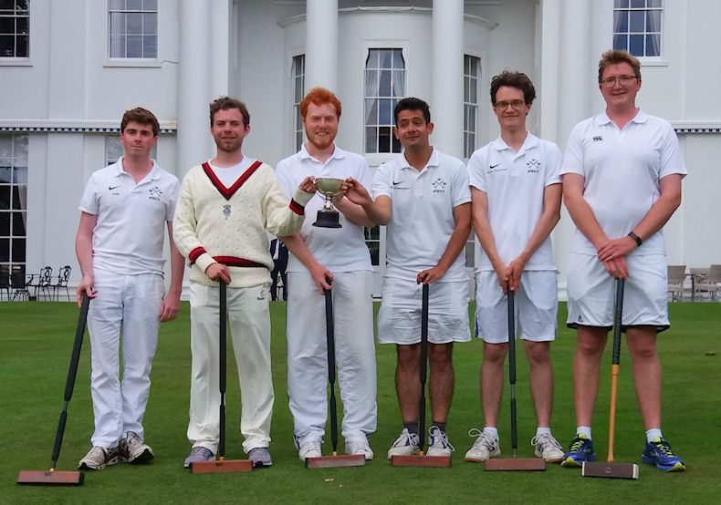
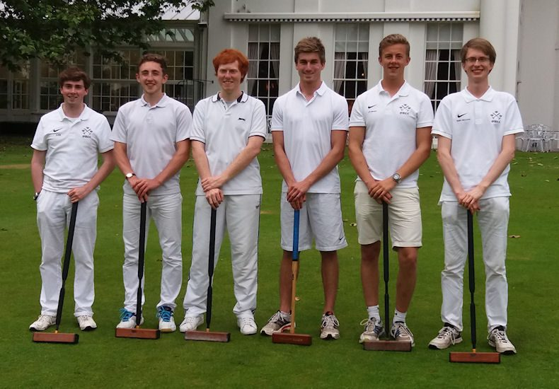

Photographs of several recent Varsity teams can be found below. Where both teams can be identified, those names given in bold are Oxford team members. Any additions to the archive will be most welcome; please contact croquet.club@studentclubs.ox.ac.uk with any details or offers of photographs.
2026
Alex Gruen, Nihar Gokhale, Jonathan Dearlove, Charlie Sharpe, Teo D'Agostino, Swisa Pongpech.
2025
Alannah Chadwick, Hugo Bird, Ed Harrison, Charlie Sharpe, Adrian Fernandes, Archie Bermingham, Teo D'Agostino.
2024
Sam Reynolds, Charlie Sharpe, Oli Brewster, Colin Mullins, Josh Jackson, Greg Simond.
2023
Dan Millard, Greg Simond, Tom Mewes (Captain), Charlie Sharpe, Gus Smith, Tom Cairns.
2022
Josh Taylor, Harry Forsyth, Teddy Wilmot-Sitwell (Captain), Tom Mewes, Chris Summers, Greg Simond. Photo: Simon Yun-Farmbrough
2021
Nicholas Orr, Joshua Cowls, Joshua Thomas, Mark Baker (Captain), Osian Williams, Harry Anderton
2020
Cancelled due to Covid restrictions.
2019

Tom Harmer, Mark Baker (Captain), Dan McKavanagh, Ollie Gardner, Mark van Loon, Harry Anderton
2018

Thomas Peak, William Nathan, Kirandeep Saini, Mark van Loon (Captain), Joshua Bull, John-Francis Martin
2017

Alex Bishop, William Nathan, Jordan Waters (Captain), Mo KaramiNejadRanjbar, Jasper Theodor Kauth, Joshua Bull
2016

Alex Bishop, Harry Williams, Jordan Waters, Leif Bersweden, James Scoon, Mark van Loon (Captain)
2015
Richard Sykes, Alex Bishop, Jordan Waters, Mark van Loon (Captain), Ian Plummer (Referee), Martin Lester, Theo Silkstone-Carter, Daniel Gott
2014
(L to R) Martin Lester, Fred Woodcock, James Flannery, Harry Fisher, Richard Hilditch (referee), Rajiv Gogna, Jordan Waters
2013
(L to R) Jordan Waters (ox), Martin Lester (ox), Peter Willeit (camb), Jamie Townsend (ox), Peter Ford (camb), Will Gee (ox), Cesar Miranda (camb), Jamie Morrison (ox), Richard Hilditch (referee), Richard Sykes (ox), Joel Taylor (ox), Renad Mansour (camb), Douglas Buisson (camb), Harry Fisher (ox), Tom Eccles (camb).
2012
(L to R) Ben Mason, James Keiller, Luke Valori, John Gale, Simon Picot, Richard Sykes. (Will Gee was unavailable for the photograph)
2011
(L to R)Nigel Urban, Matt Smith, Simon Picot, John Gale, William Gee, Harry Fisher, Jonathan Lindsell, Luke Valori.
2010
(L to R)Luke Valori, Jonathan Lindsell, James Ramsay, Will Alderton, Tom Whiteley, Yuri Gulla, Alex Evans, Ben Mason, Andrew Donner.
2009
Oxford team (top) Matthew Smith, Oliver Cohen, Mark Baker, Harry Fisher, Robert Wilkinson, Yuri Gulla.
Cambridge team (bottom) Nick Jenkins, Elly Betton, Joel Taylor, William Eucker, Richard Fellows, Tom Davenport.
2008
2007
2006
2005
Team: Chris Hansen, Mark Snow, Roger Cotes, Andrew Cottrell, Michael Solomon, Jonathan Kirby, Anton Evseev, Sam Mooring, (not in picture order; The 7 Oxford players are wearing team shirts, and there are 4 Cambridge players in the photo as well (1 at left, 1 center wearing a vest, and 2 at right).
2004
(L to R) B Wylie, Chris Rome, Alex Mair, Asif Arshad (Capt.), W Hill, Paul Elliston, Jonathan Kirby , David Follows(Capt.) , Mark Snow , Mark Gooding , Sam Mooring , Alex Gray , Anton Evseev , Chris Hansen , John Hope .
2002
Back Row:
Mark Snow
,
Simon Procter
,
Mark Gooding
, Paul Kirby, Ben Elwell, Rob Bates
Front Row:
Jonathan Willson
,
Guy Towlson
,
Stuart Romeril (Capt.)
,Jonathan Fuller (Capt.), Aaron Burchell
Absent: Sam Tudor
2001
Back Row:
Jonathan Jordan
,
Simon Procter
,
Mark Gooding
, Aaron Burchell, William Windham, Paul Kirby, Ben Elwell
Front Row:
Jonathan Willson
,
John Taylor
,
Stuart Romeril (Capt.)
, Richard Hilditch (Ref.), Aaron Westerby (Capt.), Jonathan Kirby
Absent:
Guy Towlson
, Jonathan Fuller
2000
Guy Towlson, Jenny Williams, John Taylor, Gabrielle Higgins, Oliver Homer, Nic Farhi (kneeling)
1999
Nicholas Farhi, Alan Denton, Jenny Williams, John Taylor, Gabrielle Higgins, Guy Towlson, Rupert Parson
1997
Rupert Parson, Gabrielle Higgins, Russell Manning, Ian Plummer, Nick Stebbing, Doug Burns, Jonathan Repp.
1996
Stuart Parker, Jonathan Repp , Geoff Bache, Phil Rees , Justin Jones, Chris Dent, Nick Stebbing , David Harrision-Wood (referee), Russell Manning , Iain Fratter , Samir Patel , Douglas Burns , Rupert Parson , David Burns
1994
Back Row: Dominic Wreford, Christopher Farthing, Timothy Prosser.
Front Row: Michael Porter, Philip Camp, David Burns
1993
Phil Rees, Dominic Wreford, David Burns, Simon Rea, Christopher Patmore, Christopher Farthing, Richard Hilditch (referee)
1992
From left: Philip Rees, Christopher Patmore, Christopher Farthing, Michael Porter, Timothy Prosser
1991
Crouching: Tony Whyte, Kevin Cooper, Steve Gardner, Andrew Byford, Andrew Grimbaldeston, Mark?
1990
Back Row: Nigel Williams, Tony Whyte, Michael Aniley-Walker, Tim Marr, Robin Brown.
Front Row: Nigel Turner, Paul Harbourd
1983
Back Row: Ian Plummer, Jon Watson, Adam Berry, Alan Harper
Front Row: John Black, Robert Andrews
1978
Back Row: Ian Bond, Phil Boddington, Graeme Roberts
Front Row: Colin Dinwoodie, Sue Foden, Bryan Sykes